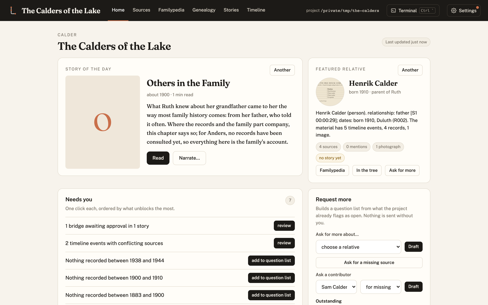
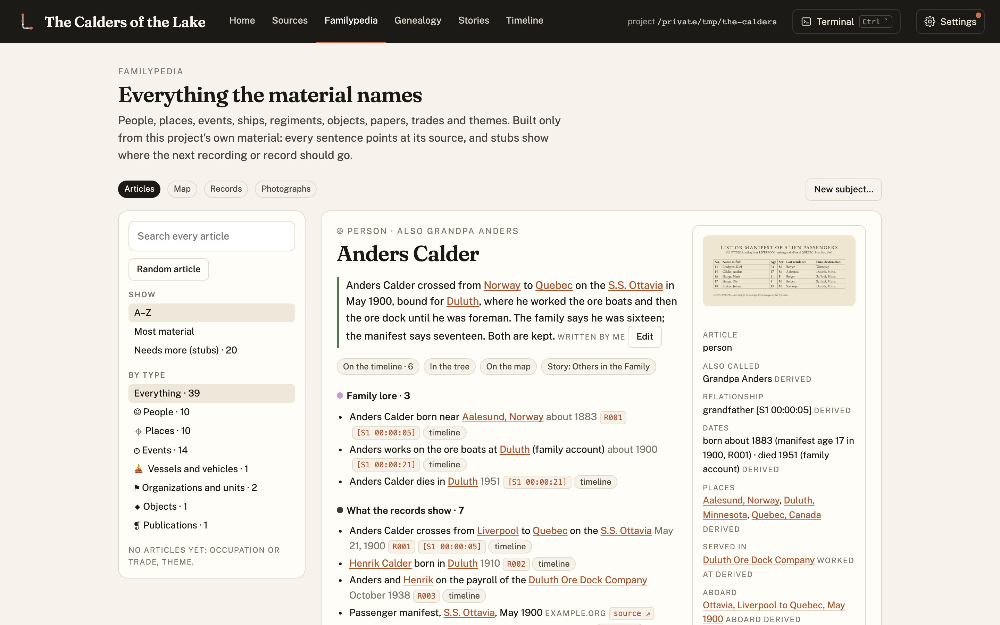
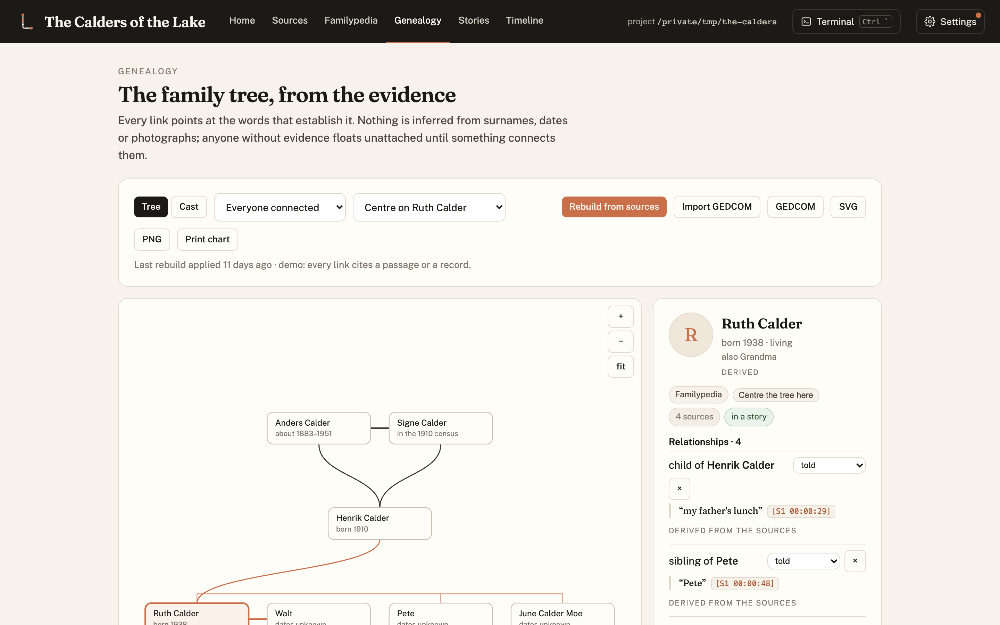
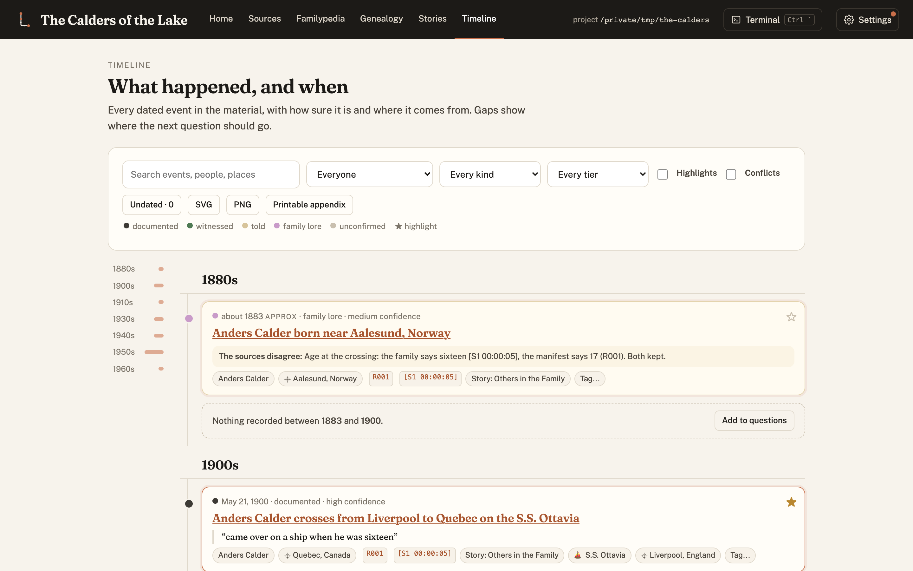

A family's own research platform.
Collect what the family has, check it against the records, and keep it as a sourced, browsable record that outlives everyone in it. Recorded interviews, letters, scans and public records become a living family encyclopedia, and, at the end, a sourced book.

Family history lives in a dozen places at once
A grandmother's memory, an aunt's shoebox of letters, a cousin's photographs, a museum catalogue, a ship's manifest nobody has looked at in a century. Lineage brings it into one record and keeps it honest.
Everyone contributes
Recordings, photographs, documents, letters, scans, links. Each one is ingested, summarized, tagged to the people and subjects in it, and indexed. Nothing is renamed or altered on disk.
Records beside the family's version
Archives, censuses, rosters, ship registers and newspapers are searched, catalogued and snapshotted. Where a record and the family disagree, Lineage keeps both and says so.
A living record
A genealogy built from evidence, a timeline, and a Familypedia with an article for every person, place, event, vessel and object. Every fact clicks back to the passage or record behind it.
Stories and a book, at the end
Stories, a printed book and narration are exports of the record. They inherit its sourcing; anything a writer adds is held as a bridge until a person approves it.
What makes it different
| Cooperative | Many contributors, one shared record. Everyone adds what they have; the editor reviews it before it counts. |
| Researched | Archives and public records, catalogued by type (passenger list, census, ledger, newspaper), with archive, number, link and retrieval date, and a local snapshot. |
| Honest | Every fact carries its tier: witnessed, told, family lore or what the records show. Contradictions are kept and shown. Generated images are always marked as illustrations. Nothing is invented; anything a writer would like to add is held as a bridge until a person approves it. |
| Durable | Plain files in a git repo you own: CSV, Markdown, JSON, the original scans. The record outlives the links, the apps and the people in it. |
See it on an invented family

Familypedia
The family says Anders crossed at sixteen; the manifest says seventeen. The article keeps both.

Genealogy
Every link points at the words or the record that establish it. No evidence, no line.

Timeline
Every dated event, coloured by evidence tier, with a flag wherever the sources disagree.
The book falls out of the record
Story units are cut from the transcripts, arranged on a chapter map, written under strict style rules (quotes exact, every paragraph cited), set in Typst with front matter, a timeline, a records appendix and an index, and checked for print.
Read the sample book (PDF, 30 pages)
The sample book is about an invented grandmother, built by make sample from invented recordings.
Try it in 60 seconds
git clone https://github.com/rexsaurus/Lineage.git
cd Lineage
make install # Python tools; needs typst (brew install typst)
make demo # the dashboard, on a scratch copy of the demo lineage